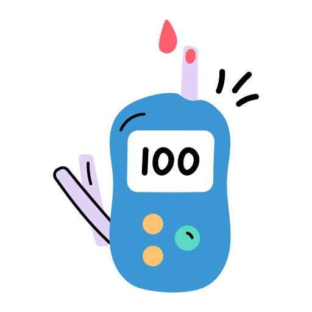

After being diagnosed with diabetes, it's important to take a series of measures to manage diabetes and maintain a healthy lifestyle. Here are some key points to consider for diabetes management:
-
Regular Exercise: Physical activity can help control blood sugar levels. Aim for at least 150 minutes of moderate aerobic exercise per week. Exercise can lower blood sugar and increase insulin sensitivity.
-
Healthy Eating: A balanced diabetes diet can help keep blood sugar levels in check. Consume high-fiber foods, whole grains, vegetables, fruits, and healthy fats. Also, avoid processed sugars and high-carb foods.
-

Monitoring Blood Sugar: Regularly monitor blood sugar levels. This helps you track the effectiveness of your treatment and make adjustments if necessary. Check your blood sugar levels as often as recommended by your doctor.
-
Consistent Use of Medications and Insulin: Take prescribed medications and/or insulin regularly. Not missing doses helps keep blood sugar levels in check.

-
Maintaining a Healthy Weight: Maintaining a healthy body weight is important for reducing diabetes risk or keeping existing diabetes under control. If necessary, seek guidance from a dietitian or doctor to manage your weight.
-
Avoiding Smoking and Alcohol: Smoking and excessive alcohol consumption can increase the risk of diabetes complications and make blood sugar control difficult. Therefore, avoid smoking and limit alcohol consumption if possible.
-
Managing Stress: Stress can elevate blood sugar levels. Try stress-reducing techniques such as relaxation techniques, deep breathing exercises, yoga, or meditation.
-
Regular Health Check-ups: Regularly consult with your doctor to monitor your health status related to diabetes. Eye exams, foot care, and other routine check-ups can help detect diabetes-related complications early.